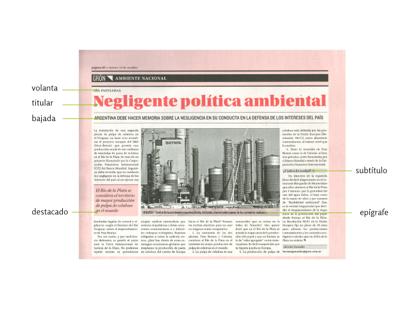
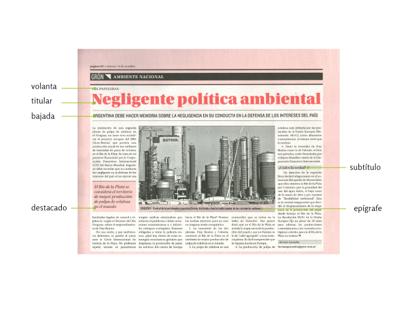

Recursos gráficos para ediciones periódicas
Posted by OERT - sep 10, 2012
Página, Teoría
Elaboración: Pablo Cosgaya, Natalia Pano
Las publicaciones periódicas (diarios, revistas, fascículos, etc.) son registros parciales de nuestra cultura con cierto grado de relatividad temporal y espacial. Estas publicaciones reproducen contenido e informaciones renovables: se actualizan en el período de tiempo que corresponde (diario, semanal, quincenal, mensual, etc.).
Las publicaciones periódicas, por tanto, deben contar a la hora de su lanzamiento con una maqueta inicial. Esta maqueta será un patrón, una estructura de base, en la que estarán definidas las constantes gráficas que van a caracterizar la publicación.
Esas constantes gráficas son la paleta tipográfica, el color de texto, el cuerpo tipográfico, la interlínea, las presencia de capitulares, misceláneas, los marcos y los márgenes. La conjunción de estos elementos gráficos, tipográficos y eventualmente fotográficos, combinados de cierta manera para cumplir determinadas funciones, colaboran en la definición de un código característico.
Al comienzo del proyecto de una publicación, se diseña una maqueta inicial, sobre la que se completan todas las decisiones. En la mayoría de los casos, las maquetas experimentan cambios en el tiempo: la aplicación de los elementos la redefinen constantemente.
Las secciones periodísticas (mundo, país, información general, sociedad, deportes, etc.) se organizan espacialmente en la publicación a partir de una estructura que, por lo general, es otra de las constantes de la publicación. Las notas que no pertenecen a una sección determinada deben guardar relación con las demás, a la vez que deben diferenciarse de las mismas. Como puede advertirse, se pone a prueba un juego sutil de constantes y variables en cada caso.
Las publicaciones periódicas tienen una estructura estable que permiten al lector recorrer su propio itinerario en la lectura. Ciertos elementos gráficos le facilitan al lector distintas entradas rápidas a la página: el título, las fotos, los epígrafes. También la volanta, el título de sección y los destacados en el cuerpo de la nota. Se trata de elementos que capturan la atención del lector antes que el texto y proponen distintas navegaciones según el interés del usuario.
Los recursos de navegación aligeran la lectura y contribuyen con la jerarquización del contenido. Esto responde a las necesidades propias de las publicaciones periódicas que, por sus dimensiones, diversidad de temas y cantidad de páginas, requieren una organización que proponga distintos recorridos de revisión del material, que dependerán a su vez de los intereses de cada lector. Así, un lector buscará solo pantallazos generales, y otro podrá detenerse y profundizar en las noticias.
Edición de textos (recursos gráficos)
Los recursos del titulado son: el cintillo, la volanta, el título o titular, y la bajada, resumen, copete o sumario. Más allá de la navegación de cada lector, la combinación volanta/título/bajada se articula como una unidad informativa. Esto es, los tres elementos en su conjunto enuncian, ubican y desarrollan los datos esenciales de la nota. Para ello hay que pensar cada elemento de esta unidad como un complemento indispensable de los otros dos: no deben repetir información. A la vez, los criterios de titulación deben ser coherentes a lo largo de toda la publicación, pues constituyen un estilo.
-
 Alumna: Patricia Faggi
Alumna: Patricia Faggi
-
 Alumna: Patricia Faggi
Alumna: Patricia Faggi
-

Alumna: Patricia Faggi
-
Alumna: Patricia Faggi
-
Alumna: Patricia Faggi
-
Alumna: Patricia Faggi
Cintillo (1)
Elemento que unifica un tema cuando su desarrollo exige más de una página. Enunciado breve que anticipa el tipo de acontecimiento explicitado en los demás miembros del titulado.
Título (2)
Debe enunciar claramente el hecho, aun en los casos de temas que son objeto de seguimiento durante determinados períodos. La originalidad y la claridad determinan la calidad del título.
Volanta (3)
Ubica, anticipa y/o contextualiza la información del título. Es una definición temática que en muchos casos agrega información. Admite continuidad de lectura con el título, pero no es obligatorio tenerla. Los atributos principales de su enunciado son: precisión y claridad. Varios periódicos priorizan aquí la información indispensable, utilizan frases cortas, evitan el uso de frases subordinadas y las alusiones.
Bajada (4)
Desarrolla lo esencial de la información y por lo tanto tiene una relación de continuidad de lectura con el título, independientemente de la navegación que haga el lector. En varios periódicos se trata de enunciados breves, no necesariamente relacionados entre sí. Estos enunciados admiten continuidad sintáctica aunque las frases estén separadas por un punto. La función de la bajada es sostener y alimentar el título; contextualizar, ordenar la información y desagregarla con datos puntuales. En algunos casos, constituye un resumen de lo que se ofrece al lector en el texto principal de la la nota. Se deben evitar las bajadas que remitan a elementos secundarios o desvíen la atención y el sentido de lectura.
Otros elementos de lectura rápida
Además de los recursos antes enunciados, existen otros elementos que contribuyen al procesamiento de la información de una publicación periódica. Estos son el epígrafe, los destacados, las notas subordinadas, las tablas y resúmenes.
Epígrafe (5)
Puede constituir una de las primeras entradas del lector a la página y su importancia equivale a la de los elementos del titulado. Debe ser claro y preciso. Se refiere a la foto y agrega información; no debe repetir lo que figura en el título, la volanta o la bajada. No debe decir lo que en la foto es obvio.
Aporta en cambio los datos necesarios para esclarecer lo que muestra la imagen. Estos datos incluyen nombres o datos necesarios de las personas fotografiadas, descripción de hechos registrados, la explicación de cualquier parte que no esté clara en la fotografía y todo dato que resulte pertinente para ampliar la información de la imagen (fecha, lugar…).
Destacado
Es un elemento ubicado en medio del cuerpo de la nota, cuya función principal es aligerar la lectura y destacar núcleos de información. Dado que el lector puede recorrer la nota a nivel superficial y leer solo los destacados, su elaboración requiere atención y cuidado.
Notas subordinadas, tablas, resúmenes
El contenido de estos recursos requiere en muchos casos una elaboración posterior a partir del texto de base. Contienen información cuya consistencia permite al editor o al redactor extraer ese texto de la nota principal y ajustar su dimensión según sea necesario. La presencia de estos recursos y la consistencia de su apariencia gráfica les permite ser utilizados para equilibrar la diagramación y compensar espacios vacíos. Así, se busca que su altura o su ancho guarde relación con los elementos que acompañan al texto: fotos, otras tablas, recuadros, etc.
Pese a estos elementos, la estructura editorial será vacía si no se la referencia a un código determinado. Tengamos presente que no se tratará solamente de un código gráfico: por un lado, el sistema de representación formal requiere estrategias y respuestas atractivas específicas, que otorgan identidad a cada publicación; por otro, los criterios periodísticos, el enfoque ideológico y el lenguaje empleado para llegar al lector también moldearán esa identidad.
Como diseñadores, podemos actuar como nexo entre las partes en juego: podemos sugerir cómo leer las notas. Podemos diseñar a partir de las fotografías, de las ilustraciones o de una mezcla de ambas, mediante una asociación de contenidos en un contexto determinado y reflejado a través de la imagen visual. El departamento de diseño contribuye al equilibrio en el proyecto editorial. Nuestro trabajo debe centrarse en simplificar la información para el lector y hacer lo más clara posible la estructura de la publicación que tiene en sus manos para que, una vez que éste se disponga a leer, pueda adentrarse en cada nota e interesarse por su contenido a través de presentaciones claras, con sus partes debidamente jerarquizadas. El diseño editorial y la tipografía son indivisibles de la información que presentan y organizan. Pensar el diseño como pura forma, desvinculada del contenido, es un sinsentido.
- ALMEIDA, Marta. “La eficacia editorial”, tpG43, Buenos Aires. Manuales de estilo de periódicos (La Nación, Clarín, El País).
- MARTÍNEZ DE SOUSA, José. Diccionario de Edición, Tipografía y Artes Gráficas. Trea, Gijón, 2001.
- DE BUEN UNNA, Jorge. Manual de diseño editorial. 3.ª edición, corregida y aumentada. Trea Ediciones, España, 2009.
Esta entrada también está disponible en: Inglés

Related Posts
-
Composición y modulación
September 10, 2012
Orden y espacio. Modulación como herramienta de diseño y comunicación. Interlínea como unidad de modulación. Construcción de la grilla tipográfica: modulación vertical y horizontal. Legibilidad y modulación.
-
Publicar un libro
February 20, 2012
Contexto de edición de libros. Ediciones formales e informales, analógicas o digitales, artesanales o industriales. La producción, impresión y distribución. Funciones del editor. Proceso editorial. ISBN, características y función. Catalogación en fuente, características y función.
-
Tipografía y proporciones
January 10, 2012
Proporción y orden. Relaciones en el formato de página, distintas progresiones. Largo de línea y efecto en la lectura. Factor o rendimiento tipográfico. Ancho de columna y márgenes. Relaciones entre mancha tipográfica y página.
-
Elementos de un libro
January 10, 2012
Responsabilidad y orden de trabajo. Cortes del libro y cuidados. Tapa o cubierta. Sobrecubierta. Guardas. Hoja de respeto o cortesía. Anteportada o portadilla. Páginas preliminares. Página legal o de créditos. Dedicatoria, Reconocimientos. Prólogo. Prefacio. Introducción. Índice. Listado de abreviaturas. Títulos de partes o de capítulos. Cornisas o cabeceras. Texto principal. Caja tipográfica. Citas. Folios. Páginas finales. Epígrafe. Notas. Glosario. Colofón.
 Español
Español English
English